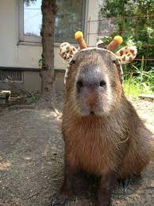

Das Capybara oder Wasserschwein (Hydrochoerus hydrochaeris) ist eine Säugetierart aus der Familie der Meerschweinchen (Caviidae). Es bildet gemeinsam mit dem Panama-Capybara (Hydrochoerus isthmius) die Gattung Hydrochoerus und ist das größte heute lebende Nagetier. Es bewohnt feuchte Regionen in Südamerika und ist vom Körperbau seiner semiaquatischen (teilweise im Wasser stattfindenden) Lebensweise angepasst. Zu den natürlichen Feinden der Capybaras zählen vor allem Katzen wie der Jaguar, der Puma und der Ozelot, außerdem der Waldhund, aber auch Kaimane und Anakondas. Jungtiere fallen manchmal Greifvögeln wie der Harpyie und den Geierfalken (Karakaras) zum Opfer. 
*Aber geben Sie sich in Acht, Capybaras können sehr gefährlich sein, wie im folgenden Bild zu sehen.